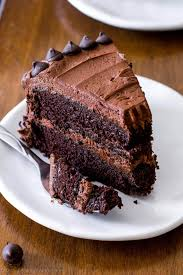
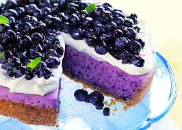
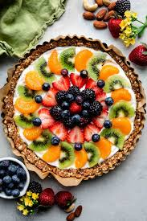

Indulge in these sweet treats!

Decadent Chocolate Cake that's rich and moist.1. Decadent Chocolate Cake Ingredients (for Cake): 1 3/4 cups all-purpose flour 1 1/2 cups granulated sugar 3/4 cup unsweetened cocoa powder 1 1/2 tsp baking powder 1 1/2 tsp baking soda 1 tsp salt 2 large eggs 1 cup whole milk 1/2 cup vegetable oil 2 tsp vanilla extract 1 cup boiling water or hot coffee (for extra richness) Ingredients (for Frosting): 1 cup unsalted butter, softened 1 1/2 cups unsweetened cocoa powder 4 cups powdered sugar 1/2 cup whole milk 2 tsp vanilla extract A pinch of salt Instructions (Cake): Preheat your oven to 350°F (175°C). Grease and flour two 9-inch round cake pans. In a large bowl, whisk together the flour, sugar, cocoa powder, baking powder, baking soda, and salt. Add the eggs, milk, oil, and vanilla to the dry ingredients. Mix until well combined. Gradually stir in the boiling water (or coffee) until the batter is smooth and thin. Divide the batter evenly between the two prepared pans and bake for 30-35 minutes or until a toothpick inserted comes out clean. Allow the cakes to cool in the pans for 10 minutes, then transfer to a wire rack to cool completely. Instructions (Frosting): In a large bowl, beat the butter and cocoa powder together until smooth. Gradually add the powdered sugar, alternating with the milk, and beat until the frosting is fluffy and smooth. Add the vanilla and a pinch of salt, and beat for an additional minute. Frost the cooled cakes, layering them, and finish with frosting around the entire cake.

Classic Cheesecake with a graham cracker crust.2. Cheesecake with a Graham Cracker Crust Ingredients (for Crust): 1 1/2 cups graham cracker crumbs 1/4 cup granulated sugar 6 tbsp unsalted butter, melted Ingredients (for Filling): 3 (8 oz) packages of cream cheese, softened 1 cup granulated sugar 1 tsp vanilla extract 3 large eggs 1/2 cup sour cream 1/4 cup heavy cream Instructions: Make the Crust: Preheat your oven to 325°F (160°C). In a medium bowl, mix the graham cracker crumbs, sugar, and melted butter until evenly combined. Press the mixture into the bottom of a 9-inch springform pan, making sure it’s firm and even. Bake for 10 minutes, then set aside to cool. Make the Filling: In a large mixing bowl, beat the softened cream cheese until smooth. Gradually add the sugar, and continue to beat until creamy. Add the vanilla, then beat in the eggs one at a time, mixing well after each addition. Stir in the sour cream and heavy cream until the filling is smooth and well combined. Pour the filling into the prepared crust. Bake: Bake the cheesecake for 50-60 minutes, until the center is set but still slightly jiggly. Turn off the oven and crack the door open. Let the cheesecake cool in the oven for 1 hour. Refrigerate the cheesecake for at least 4 hours or overnight before serving.

Fresh Fruit Tart topped with seasonal fruits.3. Fresh Fruit Tart Topped with Seasonal Fruits Ingredients (for Crust): 1 1/4 cups all-purpose flour 1/4 cup powdered sugar 1/2 cup unsalted butter, chilled and cubed 1-2 tbsp ice water Ingredients (for Filling): 1 cup whole milk 2 large egg yolks 1/4 cup granulated sugar 2 tbsp cornstarch 1 tsp vanilla extract 1 tbsp unsalted butter 1/2 cup heavy cream, whipped Ingredients (for Topping): Fresh seasonal fruits (berries, kiwi, peaches, mango, etc.) 2 tbsp apricot jam (for glaze) 1 tbsp water (to thin the jam) Instructions: Make the Crust: Preheat your oven to 350°F (175°C). In a food processor, pulse the flour, powdered sugar, and chilled butter until the mixture resembles coarse crumbs. Add the ice water, 1 tablespoon at a time, until the dough comes together. Roll out the dough and press it into a 9-inch tart pan. Prick the bottom with a fork. Bake for 20 minutes, or until golden brown. Let the crust cool completely. Make the Filling: In a small saucepan, heat the milk until it begins to steam but not boil. In a separate bowl, whisk together the egg yolks, sugar, and cornstarch. Slowly pour the hot milk into the egg mixture while whisking constantly. Return the mixture to the saucepan and cook over medium heat until thickened, about 2-3 minutes. Stir in vanilla and butter. Let the pastry cream cool, then fold in the whipped cream. Assemble the Tart: Spread the cooled pastry cream into the baked tart shell. Arrange fresh fruit on top in a decorative pattern. Heat the apricot jam with water and brush it over the fruit for a shiny glaze. Refrigerate for at least 1 hour before serving.